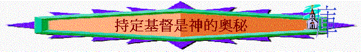

C.持定元首──持定基督是神的奧秘(1:24-2:7)
引言
1:26及2:2提及「奧秘」，一想起奧秘，你會想起什麼？
〜當時的異端指他們的「奧秘」是隱藏，唯有教中最高級的人才能明白奧秘，所以越知道奧秘者，地位越高。 但信徒不是追求以上奧秘，他們已是知道的，保羅從回憶他所作及講述他的心聲中也表達真正要知道的乃是神的奧秘----基督，不要受人迷惑而動搖。
1.1:24提及保羅為肢體及為教會付出什麼代價？ 他的心情如何? 為何受苦仍可歡樂?
2. 何謂「補滿基督患難的缺欠」？（可參考 約14:12; 約15:18-19; 約16:33）保羅為肢體為教會的付出有什麼值得我們效法?
3. 1:25保羅的職份是什麼？ 何謂職份? 何謂執事? 有什麼主要的工作？
4. 1:26這道理是什麼？「隱藏的奧秘」否仍是「隱藏」？為什麼？
5. 1:27指「隱藏的奧秘」內容是什麼? 同外邦人又有什麼關係？為何說是奧秘？
6. 1:27又與基督有關嗎？為何神的奧秘是基督(2:2)？而基督、奧秘、外邦人三者有什麼關係？若沒有基督會怎樣？
7. 今天人喜歡追求什麼奧秘的事？你有沒有認識一些基督徒會追求一些靈異奧秘神奇的事？但真正的奧秘是什麼？是否這麼玄妙難以理解的？
8. 1:28-29 保羅怎樣傳揚他(神的奧秘--基督)? 他有什麼終極目的? 他又付出了什麼? 有什麼值得我們學習?
9. 2:1-2 保羅為何何等竭力作主的工作？他想達到什麼果效? 何謂「心得安慰」？何謂「愛心互相聯絡」?「在悟性上有充足的信心」的悟性指什麼? 最終知道什麼事? 基督與知慧及知識有什麼關係?
10. 安慰、聯絡、信心的相反是什麼? 教會遇到什麼衝擊可以有這些相反的表現? 2:4又提及什麼衝擊?
11. 有沒有聽過一些基督徒受「花言巧語迷惑」而離開真道？對你有什麼提醒？
12. 2:5 保羅期望信徒怎面對這些衝擊? 何謂「循規蹈矩」? 何謂「堅固」? 焦點放在誰身上?
13. 2:6-7提及我們接受了這奧秘---基督後,我們當如何走天路?
14. 你接受了主有多久? 你現在最渴望在信心及行道上,那方面進深及更堅固?